How to fit a population receptive field model to fMRI data¶
Author: Malte Lüken (m.luken@esciencecenter.nl)
Difficulty: Beginner
Important: This tutorial requires pycortex which is only available for Linux and MacOS. See Installing pycortex for details.
This tutorial explains how to fit a population receptive field (pRF) model to blood oxygnenation level-dependent (BOLD) functional magnetic resonance imaging (fMRI) data.
A pRF model maps neural activity in a brain region of interest (ROI; e.g., V1 in the human visual cortex) to an experimental stimulus (e.g., a bar moving through the visual field). Here, we use the visual domain as an example, where the the pRF is the part of the visual field that stimulates activity in the region of interest.
Because prfmodel uses Keras for model fitting, we need to make sure that a backend is installed before we begin. In this tutorial, we use the TensorFlow backend.
import os
from importlib.util import find_spec
# Set keras backend to 'tensorflow' (this is normally the default)
os.environ["KERAS_BACKEND"] = "tensorflow"
# Hide tensorflow info messages
os.environ["TF_CPP_MIN_LOG_LEVEL"] = "1"
if find_spec("tensorflow") is None:
msg = "Could not find the tensorflow package. Please install tensorflow with 'pip install .[tensorflow]'"
raise ImportError(msg)
Loading the surface¶
Before we start modelling, we need to make sure that we have all the requirements to visualize the BOLD response data. To visualize fMRI data, we can project it onto an anatomical surface of the brain. In this tutorial, we use a standardized surface based on the
surface of the Human Connectome Project (see https://doi.org/10.6084/m9.figshare.13372958). For visualization, we use the pycortex package which has an internal database where different surfaces can be stored and accessed. We download the surface and store it under the
subject name hcp_999999.
from prfmodel.examples import download_surface
subject = "hcp_999999"
# Download and store surface in pycortex database
download_surface(subject)
We can visualize a flatmap of the surface with pycortex. The color of the flatmap shows the curvature of the surface and several brain regions have been overlayed for orientation (e.g., V1).
import cortex as cx
curv_vertices = cx.db.get_surfinfo(subject=subject, type="curvature")
cx.quickshow(curv_vertices);
Generating a flatmap cache
** (inkscape:5224): WARNING **: 16:41:29.308: Failed to wrap object of type 'GtkRecentManager'. Hint: this error is commonly caused by failing to call a library init() function.
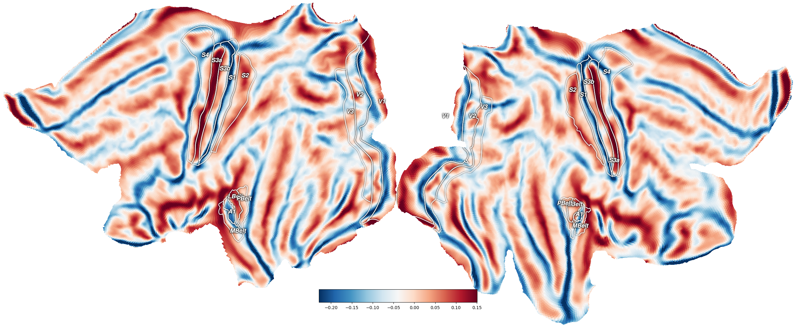
Loading the BOLD response¶
Now that we have the anatomical surface, we load BOLD response data from a single subject that can be represented on the surface mesh. Importantly, we load data from both hemispheres of the subject by setting hemisphere="both". We want to convert the BOLD response signal to percent signal change (PSC) and select unit="psc".
from prfmodel.examples import load_single_subject_fmri_data
response, stimulus = load_single_subject_fmri_data(dest_dir="data", hemisphere="both", unit="psc")
response.shape # shape (num_vertices, num_frames)
(118584, 120)
The response object contains the BOLD response timecourse for each voxel on the surface mesh. It has shape (num_vertices, num_frames) where num_vertices is the number of vertices on the surface mesh and num_frames the number of time frames of the recording. The timecourses from the left and right hemishperes are concatenated (left is first). Because the data has been converted to PSC, each timecourse should have a mean of zero.
We can plot the standard deviation of each timecourse on the surface flatmap.
# Calculate standard deviation of each timecourse
response_sd = response.std(axis=1)
# Plot response SD on surface flatmap
fig = cx.quickshow(cx.Vertex(response_sd, subject=subject, cmap="inferno"));
** (inkscape:5242): WARNING **: 16:41:39.074: Failed to wrap object of type 'GtkRecentManager'. Hint: this error is commonly caused by failing to call a library init() function.
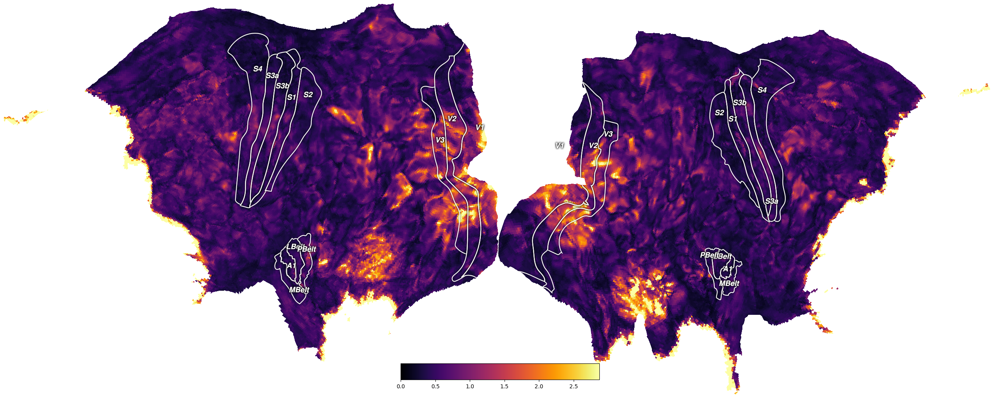
We can see that there is high variation in the signal in the visual areas (i.e., V1-V3) as we would expect for a visual stimulus. However, we also see high variation at the edge of the surface flatmap.
In this tutorial, we will only use timecourses for vertices in V1 to keep things computationally simple. To select the vertices belonging to V1, we first load an atlas that maps vertices to brain regions. This atlas is based on the multimodal parcelation atlas from the Human Connectome Project (see Glasser et al., 2016).
from prfmodel.examples import load_brain_atlas
atlas = load_brain_atlas("data")
atlas.shape # shape (num_vertices,)
(118584,)
In the atlas, V1 has the index 1, therefore, we create a mask to select the timecourses of vertices with this index.
v1_index = 1 # Index of V1
# Create boolean mask to select ROI
mask_roi = atlas == v1_index
response_roi = response[mask_roi]
response_roi.shape
(2939, 120)
We can see that we have around 3000 vertices for both hemishperes within our ROI.
Inspecting the stimulus¶
For pRF modeling, we also need the experimental stimulus that the subject has seen during the fMRI recording. Information about the stimulus is contained in the stimulus object that we loaded together with the BOLD response.
print(stimulus)
Stimulus(design=array[120, 100, 100], grid=array[100, 100, 2], dimension_labels=['y', 'x'])
When printing the stimulus object, we can see that it has three attributes. In this experiment, the design attribute defines how
the visual field changes over time. It has shape (num_frames, width, height), where width and hight define the number of pixels at which the visual field is recorded. The grid attribute maps each pixel to its xy-coordinate in the visual field (i.e., the degree of visual angle).
We can visualize the stimulus using animate_2d_stimulus.
from IPython.display import HTML
from prfmodel.stimulus import animate_2d_stimulus
ani = animate_2d_stimulus(stimulus, interval=25) # Pause 25 ms between time frames
HTML(ani.to_html5_video())
We can see that the stimulus consists of four rectangular bars that move vertically and horizontally across a screen spanning a range of 20 degrees of visual angle.
Inspecting the data¶
Before we model the BOLD response, we should always look at the timecourses and inspect the quality of the data. To do this we draw a sample of random vertices and plot their BOLD response over time. Note that the unit of time frames is repetition time (TR) which is 1.5 seconds for this dataset.
import matplotlib.pyplot as plt
import numpy as np
num_random_vertices = 100
# Set random seed for reproducibility
rng = np.random.default_rng(123)
# Select random vertices
random_vertices = rng.choice(np.arange(response_roi.shape[0]), num_random_vertices)
response_random_vertices = response_roi[random_vertices]
fig, ax = plt.subplots(figsize=(12, 6))
ax.plot(response_random_vertices.T)
ax.set_xlabel("Time frame (in TR)")
ax.set_ylabel("BOLD response (in PSC)");
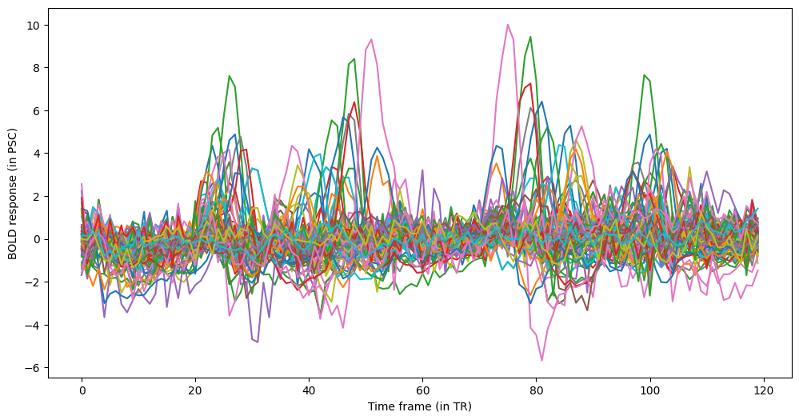
We can see that the timecourses of many vertices in the ROI have four regular peaks in the signal. These peaks correspond to the bars moving through the visual field. The goal of our pRF model is to predict these peaks as closely as possible.
We can get an even better overview by plotting a heatmap of all timecourses in the ROI.
fig, ax = plt.subplots(1, 1, figsize=(12, 6))
im = ax.imshow(response_roi, aspect=1.0 / 25.0, cmap="inferno")
ax.set_xlabel("Time frame (in TR)")
ax.set_ylabel("Vertices in ROI")
fig.colorbar(im, ax=ax, label="BOLD response (in PSC)");
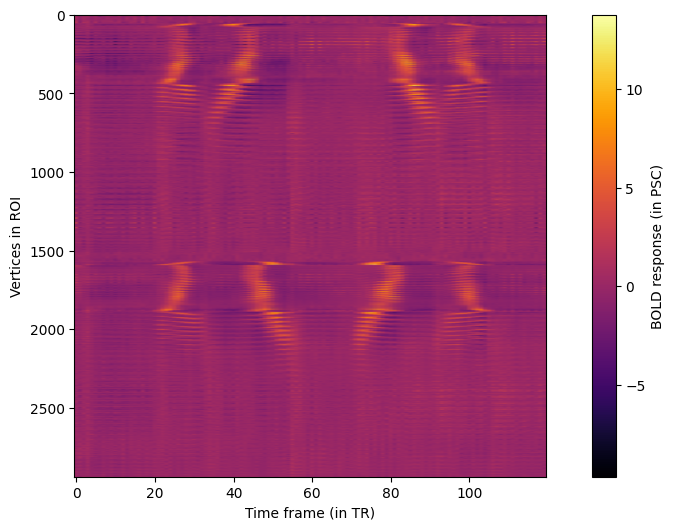
Again, we can see the four peaks in the BOLD response of ROI vertices from both hemispheres. However, the location of the peaks in the timecourse differs between vertices and hemispheres.
Defining the pRF model¶
Now that we have our BOLD response data and stimulus in place, we can create a pRF model to predict a response to this stimulus in our region of interest (i.e., V1). We use the most popular pRF model that is based on the seminal paper by Dumoulin and Wandell (2008): It assumes that the stimulus (our moving bar) elicits a response that follows a Gaussian shape in two-dimensional visual space. This response is then summed and convolved with an impulse response that follows the shape of the hemodynamic response in the brain. Finally, a baseline and amplitude parameter shift and scale our predicted response to the simulated (or observed) BOLD response.
The Gaussian2DPRFModel class performs all these steps to make a combined prediction. However, we need to add a custom impulse
response model to account for the fact that each time frame is one TR (1.5 seconds). Thus, we set the resolution
of our predicted impulse response to the TR.
from prfmodel.models.gaussian import Gaussian2DPRFModel
from prfmodel.models.impulse import ShiftedDerivativeGammaImpulse
# Define repetition time (TR)
tr = 1.5
# Create custom impulse response model
impulse_model = ShiftedDerivativeGammaImpulse(
resolution=tr,
offset=tr / 2.0,
)
We can visualize the predicted impulse response for a set of default parameters.
import pandas as pd
# Define default parameters for impulse response
impulse_default_params = pd.DataFrame({
"shape": [6.0],
"rate": [0.9],
"shift": [2.5],
})
# Predict impulse response with default parameters
impulse_response = np.asarray(impulse_model(impulse_default_params))
fig, ax = plt.subplots(1, 1, figsize=(12, 6))
ax.plot(impulse_response.T)
ax.set_xlabel("Time frame (in TR)")
ax.set_ylabel("Impulse response");
2026-01-21 16:41:48.944982: E external/local_xla/xla/stream_executor/cuda/cuda_platform.cc:51] failed call to cuInit: INTERNAL: CUDA error: Failed call to cuInit: UNKNOWN ERROR (303)
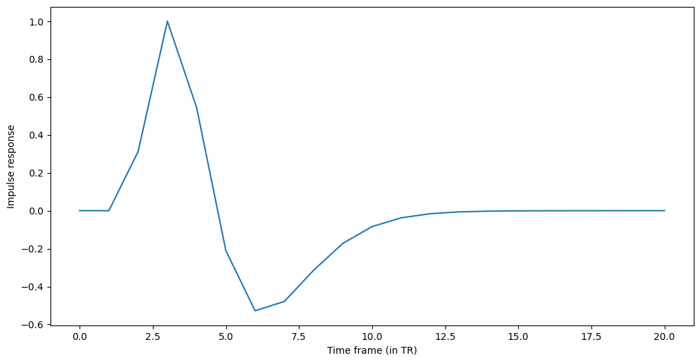
We insert the impulse model into the Gaussian2DPRFModel that makes combined model predictions.
# Define pRF model with custom impulse response submodel
prf_model = Gaussian2DPRFModel(
impulse_model=impulse_model,
)
We define a set of starting parameters to make a combined prediction with our pRF model.
# Combine pRF starting parameters with impulse response default parameters
start_params = pd.concat([pd.DataFrame(
{
"mu_x": [0.0],
"mu_y": [0.0],
"sigma": [1.0],
"baseline": [0.0],
"amplitude": [1.0],
},
), impulse_default_params], axis=1)
# Make prediction with pRF model
simulated_response = np.asarray(prf_model(stimulus, start_params))
fig, ax = plt.subplots(figsize=(6, 6))
ax.plot(simulated_response.T)
ax.set_xlabel("Time frame (in TR)")
ax.set_ylabel("Predicted BOLD response (in PSC)");
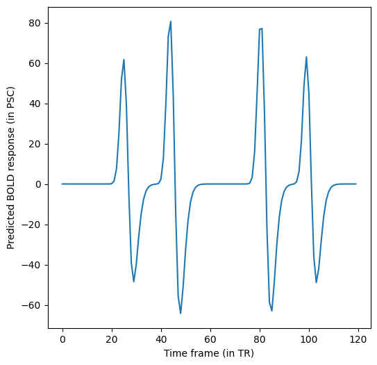
We can see the expected four peaks corresponding to the moving bars. When comparing the predicted response with the observed BOLD responses, we can see that their scales differ by roughly a factor of 10. We can control the scale of the predicted response with the amplitude parameter.
# Adjust amplitude of starting parameters
start_params["amplitude"] = 0.1
# Make a new prediction with pRF model
simulated_response_scaled = np.asarray(prf_model(stimulus, start_params))
fig, ax = plt.subplots(figsize=(6, 6))
ax.plot(simulated_response_scaled.T)
ax.set_xlabel("Time frame (in TR)")
ax.set_ylabel("Predicted BOLD response (in PSC)");
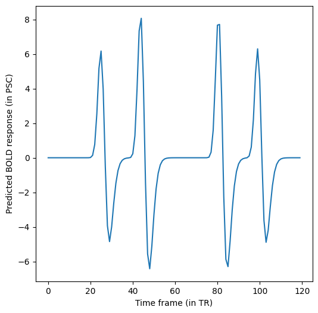
Now, the predicted response looks much closer to the observed responses.
Fitting the pRF model¶
We will fit the pRF model to our BOLD response data using two stages. We begin with a grid search to find good values for our parameters of interest (mu_x, mu_y, and sigma). Then, we use least squares to estimate the baseline and amplitude of
our model.
Note: Typically, we would also use stochastic gradient descent (SGD) to finetune our model fits after the least-squares stage. To keep the tutorial computationally simple, we omit this step here but encourage readers to explore this approach at the end.
Let’s start with the grid search by defining ranges of mu_x, mu_y, and sigma that we want to construct a grid
of parameter values from. For baseline and amplitude, we only provide a single value so that they will stay constant
across the entire grid.
param_ranges = {
"mu_x": np.linspace(-10, 10, 20), # Range of visual field in experiment
"mu_y": np.linspace(-10, 10, 20),
"sigma": np.linspace(0.005, 10.0, 20),
"shape": [6.0],
"rate": [0.9],
"shift": [2.5],
"baseline": [0.0],
"amplitude": [1.0],
}
For all three parameters, we defined ranges of 20 values that will be used to construct the grid. That is, the grid search will evaluate all possible combinations of these values and return the combination that fits the simulated data best. This will result in a grid containing \(20 ^ 3 = 8000\) parameter combinations. This is still a relatively small grid and we recommend specifying finer grids in practice.
Let’s construct the GridFitter and perform the grid search. Note that we set chunk_size=20 to let the GridFitter
evaluate 20 parameter combinations at the same time (which saves us some memory). As the loss (i.e., the metric to minimize between model predictions and data), we use cosine similarity which ignores differences in scale between model predictions and observed data.
from keras.losses import CosineSimilarity
from prfmodel.fitters.grid import GridFitter
# Create grid fitter object
grid_fitter = GridFitter(
model=prf_model,
stimulus=stimulus,
loss=CosineSimilarity(reduction="none"), # Grid fitter needs no aggregation of loss
)
# Run grid search
grid_history, grid_params = grid_fitter.fit(
data=response_roi,
parameter_values=param_ranges,
chunk_size=20,
)
grid_params
Processing parameter grid chunks: 0%| | 0/400 [00:00<?, ?it/s]
Processing parameter grid chunks: 0%| | 0/400 [00:00<?, ?it/s, loss=-0.0749]
Processing parameter grid chunks: 0%| | 0/400 [00:00<?, ?it/s, loss=-0.0785]
Processing parameter grid chunks: 0%| | 2/400 [00:00<00:23, 16.88it/s, loss=-0.0785]
Processing parameter grid chunks: 0%| | 2/400 [00:00<00:23, 16.88it/s, loss=-0.0824]
Processing parameter grid chunks: 0%| | 2/400 [00:00<00:23, 16.88it/s, loss=-0.087]
Processing parameter grid chunks: 0%| | 2/400 [00:00<00:23, 16.88it/s, loss=-0.092]
Processing parameter grid chunks: 0%| | 2/400 [00:00<00:23, 16.88it/s, loss=-0.0968]
Processing parameter grid chunks: 2%|▏ | 6/400 [00:00<00:14, 26.72it/s, loss=-0.0968]
Processing parameter grid chunks: 2%|▏ | 6/400 [00:00<00:14, 26.72it/s, loss=-0.102]
Processing parameter grid chunks: 2%|▏ | 6/400 [00:00<00:14, 26.72it/s, loss=-0.107]
Processing parameter grid chunks: 2%|▏ | 6/400 [00:00<00:14, 26.72it/s, loss=-0.112]
Processing parameter grid chunks: 2%|▏ | 6/400 [00:00<00:14, 26.72it/s, loss=-0.119]
Processing parameter grid chunks: 2%|▎ | 10/400 [00:00<00:13, 29.74it/s, loss=-0.119]
Processing parameter grid chunks: 2%|▎ | 10/400 [00:00<00:13, 29.74it/s, loss=-0.124]
Processing parameter grid chunks: 2%|▎ | 10/400 [00:00<00:13, 29.74it/s, loss=-0.128]
Processing parameter grid chunks: 2%|▎ | 10/400 [00:00<00:13, 29.74it/s, loss=-0.132]
Processing parameter grid chunks: 2%|▎ | 10/400 [00:00<00:13, 29.74it/s, loss=-0.135]
Processing parameter grid chunks: 4%|▎ | 14/400 [00:00<00:12, 31.34it/s, loss=-0.135]
Processing parameter grid chunks: 4%|▎ | 14/400 [00:00<00:12, 31.34it/s, loss=-0.138]
Processing parameter grid chunks: 4%|▎ | 14/400 [00:00<00:12, 31.34it/s, loss=-0.142]
Processing parameter grid chunks: 4%|▎ | 14/400 [00:00<00:12, 31.34it/s, loss=-0.145]
Processing parameter grid chunks: 4%|▎ | 14/400 [00:00<00:12, 31.34it/s, loss=-0.148]
Processing parameter grid chunks: 4%|▍ | 18/400 [00:00<00:11, 32.39it/s, loss=-0.148]
Processing parameter grid chunks: 4%|▍ | 18/400 [00:00<00:11, 32.39it/s, loss=-0.152]
Processing parameter grid chunks: 4%|▍ | 18/400 [00:00<00:11, 32.39it/s, loss=-0.154]
Processing parameter grid chunks: 4%|▍ | 18/400 [00:00<00:11, 32.39it/s, loss=-0.155]
Processing parameter grid chunks: 4%|▍ | 18/400 [00:00<00:11, 32.39it/s, loss=-0.155]
Processing parameter grid chunks: 6%|▌ | 22/400 [00:00<00:11, 33.34it/s, loss=-0.155]
Processing parameter grid chunks: 6%|▌ | 22/400 [00:00<00:11, 33.34it/s, loss=-0.156]
Processing parameter grid chunks: 6%|▌ | 22/400 [00:00<00:11, 33.34it/s, loss=-0.156]
Processing parameter grid chunks: 6%|▌ | 22/400 [00:00<00:11, 33.34it/s, loss=-0.156]
Processing parameter grid chunks: 6%|▌ | 22/400 [00:00<00:11, 33.34it/s, loss=-0.157]
Processing parameter grid chunks: 6%|▋ | 26/400 [00:00<00:11, 33.87it/s, loss=-0.157]
Processing parameter grid chunks: 6%|▋ | 26/400 [00:00<00:11, 33.87it/s, loss=-0.157]
Processing parameter grid chunks: 6%|▋ | 26/400 [00:00<00:11, 33.87it/s, loss=-0.158]
Processing parameter grid chunks: 6%|▋ | 26/400 [00:00<00:11, 33.87it/s, loss=-0.158]
Processing parameter grid chunks: 6%|▋ | 26/400 [00:00<00:11, 33.87it/s, loss=-0.159]
Processing parameter grid chunks: 8%|▊ | 30/400 [00:00<00:10, 34.26it/s, loss=-0.159]
Processing parameter grid chunks: 8%|▊ | 30/400 [00:00<00:10, 34.26it/s, loss=-0.159]
Processing parameter grid chunks: 8%|▊ | 30/400 [00:00<00:10, 34.26it/s, loss=-0.16]
Processing parameter grid chunks: 8%|▊ | 30/400 [00:01<00:10, 34.26it/s, loss=-0.16]
Processing parameter grid chunks: 8%|▊ | 30/400 [00:01<00:10, 34.26it/s, loss=-0.16]
Processing parameter grid chunks: 8%|▊ | 34/400 [00:01<00:10, 34.51it/s, loss=-0.16]
Processing parameter grid chunks: 8%|▊ | 34/400 [00:01<00:10, 34.51it/s, loss=-0.161]
Processing parameter grid chunks: 8%|▊ | 34/400 [00:01<00:10, 34.51it/s, loss=-0.161]
Processing parameter grid chunks: 8%|▊ | 34/400 [00:01<00:10, 34.51it/s, loss=-0.161]
Processing parameter grid chunks: 8%|▊ | 34/400 [00:01<00:10, 34.51it/s, loss=-0.161]
Processing parameter grid chunks: 10%|▉ | 38/400 [00:01<00:10, 34.53it/s, loss=-0.161]
Processing parameter grid chunks: 10%|▉ | 38/400 [00:01<00:10, 34.53it/s, loss=-0.161]
Processing parameter grid chunks: 10%|▉ | 38/400 [00:01<00:10, 34.53it/s, loss=-0.163]
Processing parameter grid chunks: 10%|▉ | 38/400 [00:01<00:10, 34.53it/s, loss=-0.164]
Processing parameter grid chunks: 10%|▉ | 38/400 [00:01<00:10, 34.53it/s, loss=-0.164]
Processing parameter grid chunks: 10%|█ | 42/400 [00:01<00:10, 34.73it/s, loss=-0.164]
Processing parameter grid chunks: 10%|█ | 42/400 [00:01<00:10, 34.73it/s, loss=-0.164]
Processing parameter grid chunks: 10%|█ | 42/400 [00:01<00:10, 34.73it/s, loss=-0.164]
Processing parameter grid chunks: 10%|█ | 42/400 [00:01<00:10, 34.73it/s, loss=-0.164]
Processing parameter grid chunks: 10%|█ | 42/400 [00:01<00:10, 34.73it/s, loss=-0.164]
Processing parameter grid chunks: 12%|█▏ | 46/400 [00:01<00:10, 34.83it/s, loss=-0.164]
Processing parameter grid chunks: 12%|█▏ | 46/400 [00:01<00:10, 34.83it/s, loss=-0.165]
Processing parameter grid chunks: 12%|█▏ | 46/400 [00:01<00:10, 34.83it/s, loss=-0.165]
Processing parameter grid chunks: 12%|█▏ | 46/400 [00:01<00:10, 34.83it/s, loss=-0.165]
Processing parameter grid chunks: 12%|█▏ | 46/400 [00:01<00:10, 34.83it/s, loss=-0.165]
Processing parameter grid chunks: 12%|█▎ | 50/400 [00:01<00:10, 34.82it/s, loss=-0.165]
Processing parameter grid chunks: 12%|█▎ | 50/400 [00:01<00:10, 34.82it/s, loss=-0.165]
Processing parameter grid chunks: 12%|█▎ | 50/400 [00:01<00:10, 34.82it/s, loss=-0.166]
Processing parameter grid chunks: 12%|█▎ | 50/400 [00:01<00:10, 34.82it/s, loss=-0.166]
Processing parameter grid chunks: 12%|█▎ | 50/400 [00:01<00:10, 34.82it/s, loss=-0.166]
Processing parameter grid chunks: 14%|█▎ | 54/400 [00:01<00:09, 34.85it/s, loss=-0.166]
Processing parameter grid chunks: 14%|█▎ | 54/400 [00:01<00:09, 34.85it/s, loss=-0.166]
Processing parameter grid chunks: 14%|█▎ | 54/400 [00:01<00:09, 34.85it/s, loss=-0.166]
Processing parameter grid chunks: 14%|█▎ | 54/400 [00:01<00:09, 34.85it/s, loss=-0.166]
Processing parameter grid chunks: 14%|█▎ | 54/400 [00:01<00:09, 34.85it/s, loss=-0.166]
Processing parameter grid chunks: 14%|█▍ | 58/400 [00:01<00:09, 34.71it/s, loss=-0.166]
Processing parameter grid chunks: 14%|█▍ | 58/400 [00:01<00:09, 34.71it/s, loss=-0.166]
Processing parameter grid chunks: 14%|█▍ | 58/400 [00:01<00:09, 34.71it/s, loss=-0.167]
Processing parameter grid chunks: 14%|█▍ | 58/400 [00:01<00:09, 34.71it/s, loss=-0.168]
Processing parameter grid chunks: 14%|█▍ | 58/400 [00:01<00:09, 34.71it/s, loss=-0.168]
Processing parameter grid chunks: 16%|█▌ | 62/400 [00:01<00:09, 34.58it/s, loss=-0.168]
Processing parameter grid chunks: 16%|█▌ | 62/400 [00:01<00:09, 34.58it/s, loss=-0.168]
Processing parameter grid chunks: 16%|█▌ | 62/400 [00:01<00:09, 34.58it/s, loss=-0.168]
Processing parameter grid chunks: 16%|█▌ | 62/400 [00:01<00:09, 34.58it/s, loss=-0.168]
Processing parameter grid chunks: 16%|█▌ | 62/400 [00:01<00:09, 34.58it/s, loss=-0.169]
Processing parameter grid chunks: 16%|█▋ | 66/400 [00:01<00:09, 34.68it/s, loss=-0.169]
Processing parameter grid chunks: 16%|█▋ | 66/400 [00:01<00:09, 34.68it/s, loss=-0.169]
Processing parameter grid chunks: 16%|█▋ | 66/400 [00:02<00:09, 34.68it/s, loss=-0.17]
Processing parameter grid chunks: 16%|█▋ | 66/400 [00:02<00:09, 34.68it/s, loss=-0.17]
Processing parameter grid chunks: 16%|█▋ | 66/400 [00:02<00:09, 34.68it/s, loss=-0.17]
Processing parameter grid chunks: 18%|█▊ | 70/400 [00:02<00:09, 34.81it/s, loss=-0.17]
Processing parameter grid chunks: 18%|█▊ | 70/400 [00:02<00:09, 34.81it/s, loss=-0.17]
Processing parameter grid chunks: 18%|█▊ | 70/400 [00:02<00:09, 34.81it/s, loss=-0.171]
Processing parameter grid chunks: 18%|█▊ | 70/400 [00:02<00:09, 34.81it/s, loss=-0.171]
Processing parameter grid chunks: 18%|█▊ | 70/400 [00:02<00:09, 34.81it/s, loss=-0.171]
Processing parameter grid chunks: 18%|█▊ | 74/400 [00:02<00:09, 34.74it/s, loss=-0.171]
Processing parameter grid chunks: 18%|█▊ | 74/400 [00:02<00:09, 34.74it/s, loss=-0.171]
Processing parameter grid chunks: 18%|█▊ | 74/400 [00:02<00:09, 34.74it/s, loss=-0.171]
Processing parameter grid chunks: 18%|█▊ | 74/400 [00:02<00:09, 34.74it/s, loss=-0.171]
Processing parameter grid chunks: 18%|█▊ | 74/400 [00:02<00:09, 34.74it/s, loss=-0.171]
Processing parameter grid chunks: 20%|█▉ | 78/400 [00:02<00:09, 34.62it/s, loss=-0.171]
Processing parameter grid chunks: 20%|█▉ | 78/400 [00:02<00:09, 34.62it/s, loss=-0.172]
Processing parameter grid chunks: 20%|█▉ | 78/400 [00:02<00:09, 34.62it/s, loss=-0.173]
Processing parameter grid chunks: 20%|█▉ | 78/400 [00:02<00:09, 34.62it/s, loss=-0.173]
Processing parameter grid chunks: 20%|█▉ | 78/400 [00:02<00:09, 34.62it/s, loss=-0.173]
Processing parameter grid chunks: 20%|██ | 82/400 [00:02<00:09, 34.49it/s, loss=-0.173]
Processing parameter grid chunks: 20%|██ | 82/400 [00:02<00:09, 34.49it/s, loss=-0.174]
Processing parameter grid chunks: 20%|██ | 82/400 [00:02<00:09, 34.49it/s, loss=-0.174]
Processing parameter grid chunks: 20%|██ | 82/400 [00:02<00:09, 34.49it/s, loss=-0.174]
Processing parameter grid chunks: 20%|██ | 82/400 [00:02<00:09, 34.49it/s, loss=-0.175]
Processing parameter grid chunks: 22%|██▏ | 86/400 [00:02<00:09, 34.61it/s, loss=-0.175]
Processing parameter grid chunks: 22%|██▏ | 86/400 [00:02<00:09, 34.61it/s, loss=-0.176]
Processing parameter grid chunks: 22%|██▏ | 86/400 [00:02<00:09, 34.61it/s, loss=-0.176]
Processing parameter grid chunks: 22%|██▏ | 86/400 [00:02<00:09, 34.61it/s, loss=-0.177]
Processing parameter grid chunks: 22%|██▏ | 86/400 [00:02<00:09, 34.61it/s, loss=-0.177]
Processing parameter grid chunks: 22%|██▎ | 90/400 [00:02<00:08, 34.57it/s, loss=-0.177]
Processing parameter grid chunks: 22%|██▎ | 90/400 [00:02<00:08, 34.57it/s, loss=-0.178]
Processing parameter grid chunks: 22%|██▎ | 90/400 [00:02<00:08, 34.57it/s, loss=-0.178]
Processing parameter grid chunks: 22%|██▎ | 90/400 [00:02<00:08, 34.57it/s, loss=-0.178]
Processing parameter grid chunks: 22%|██▎ | 90/400 [00:02<00:08, 34.57it/s, loss=-0.179]
Processing parameter grid chunks: 24%|██▎ | 94/400 [00:02<00:08, 34.50it/s, loss=-0.179]
Processing parameter grid chunks: 24%|██▎ | 94/400 [00:02<00:08, 34.50it/s, loss=-0.179]
Processing parameter grid chunks: 24%|██▎ | 94/400 [00:02<00:08, 34.50it/s, loss=-0.179]
Processing parameter grid chunks: 24%|██▎ | 94/400 [00:02<00:08, 34.50it/s, loss=-0.179]
Processing parameter grid chunks: 24%|██▎ | 94/400 [00:02<00:08, 34.50it/s, loss=-0.179]
Processing parameter grid chunks: 24%|██▍ | 98/400 [00:02<00:08, 34.27it/s, loss=-0.179]
Processing parameter grid chunks: 24%|██▍ | 98/400 [00:02<00:08, 34.27it/s, loss=-0.179]
Processing parameter grid chunks: 24%|██▍ | 98/400 [00:02<00:08, 34.27it/s, loss=-0.181]
Processing parameter grid chunks: 24%|██▍ | 98/400 [00:02<00:08, 34.27it/s, loss=-0.182]
Processing parameter grid chunks: 24%|██▍ | 98/400 [00:03<00:08, 34.27it/s, loss=-0.182]
Processing parameter grid chunks: 26%|██▌ | 102/400 [00:03<00:08, 34.15it/s, loss=-0.182]
Processing parameter grid chunks: 26%|██▌ | 102/400 [00:03<00:08, 34.15it/s, loss=-0.182]
Processing parameter grid chunks: 26%|██▌ | 102/400 [00:03<00:08, 34.15it/s, loss=-0.182]
Processing parameter grid chunks: 26%|██▌ | 102/400 [00:03<00:08, 34.15it/s, loss=-0.183]
Processing parameter grid chunks: 26%|██▌ | 102/400 [00:03<00:08, 34.15it/s, loss=-0.184]
Processing parameter grid chunks: 26%|██▋ | 106/400 [00:03<00:08, 34.34it/s, loss=-0.184]
Processing parameter grid chunks: 26%|██▋ | 106/400 [00:03<00:08, 34.34it/s, loss=-0.185]
Processing parameter grid chunks: 26%|██▋ | 106/400 [00:03<00:08, 34.34it/s, loss=-0.186]
Processing parameter grid chunks: 26%|██▋ | 106/400 [00:03<00:08, 34.34it/s, loss=-0.187]
Processing parameter grid chunks: 26%|██▋ | 106/400 [00:03<00:08, 34.34it/s, loss=-0.188]
Processing parameter grid chunks: 28%|██▊ | 110/400 [00:03<00:08, 34.46it/s, loss=-0.188]
Processing parameter grid chunks: 28%|██▊ | 110/400 [00:03<00:08, 34.46it/s, loss=-0.189]
Processing parameter grid chunks: 28%|██▊ | 110/400 [00:03<00:08, 34.46it/s, loss=-0.189]
Processing parameter grid chunks: 28%|██▊ | 110/400 [00:03<00:08, 34.46it/s, loss=-0.19]
Processing parameter grid chunks: 28%|██▊ | 110/400 [00:03<00:08, 34.46it/s, loss=-0.19]
Processing parameter grid chunks: 28%|██▊ | 114/400 [00:03<00:08, 34.75it/s, loss=-0.19]
Processing parameter grid chunks: 28%|██▊ | 114/400 [00:03<00:08, 34.75it/s, loss=-0.191]
Processing parameter grid chunks: 28%|██▊ | 114/400 [00:03<00:08, 34.75it/s, loss=-0.191]
Processing parameter grid chunks: 28%|██▊ | 114/400 [00:03<00:08, 34.75it/s, loss=-0.191]
Processing parameter grid chunks: 28%|██▊ | 114/400 [00:03<00:08, 34.75it/s, loss=-0.191]
Processing parameter grid chunks: 30%|██▉ | 118/400 [00:03<00:08, 34.90it/s, loss=-0.191]
Processing parameter grid chunks: 30%|██▉ | 118/400 [00:03<00:08, 34.90it/s, loss=-0.192]
Processing parameter grid chunks: 30%|██▉ | 118/400 [00:03<00:08, 34.90it/s, loss=-0.193]
Processing parameter grid chunks: 30%|██▉ | 118/400 [00:03<00:08, 34.90it/s, loss=-0.194]
Processing parameter grid chunks: 30%|██▉ | 118/400 [00:03<00:08, 34.90it/s, loss=-0.194]
Processing parameter grid chunks: 30%|███ | 122/400 [00:03<00:07, 35.09it/s, loss=-0.194]
Processing parameter grid chunks: 30%|███ | 122/400 [00:03<00:07, 35.09it/s, loss=-0.194]
Processing parameter grid chunks: 30%|███ | 122/400 [00:03<00:07, 35.09it/s, loss=-0.195]
Processing parameter grid chunks: 30%|███ | 122/400 [00:03<00:07, 35.09it/s, loss=-0.196]
Processing parameter grid chunks: 30%|███ | 122/400 [00:03<00:07, 35.09it/s, loss=-0.197]
Processing parameter grid chunks: 32%|███▏ | 126/400 [00:03<00:07, 35.38it/s, loss=-0.197]
Processing parameter grid chunks: 32%|███▏ | 126/400 [00:03<00:07, 35.38it/s, loss=-0.199]
Processing parameter grid chunks: 32%|███▏ | 126/400 [00:03<00:07, 35.38it/s, loss=-0.201]
Processing parameter grid chunks: 32%|███▏ | 126/400 [00:03<00:07, 35.38it/s, loss=-0.202]
Processing parameter grid chunks: 32%|███▏ | 126/400 [00:03<00:07, 35.38it/s, loss=-0.205]
Processing parameter grid chunks: 32%|███▎ | 130/400 [00:03<00:07, 35.59it/s, loss=-0.205]
Processing parameter grid chunks: 32%|███▎ | 130/400 [00:03<00:07, 35.59it/s, loss=-0.207]
Processing parameter grid chunks: 32%|███▎ | 130/400 [00:03<00:07, 35.59it/s, loss=-0.207]
Processing parameter grid chunks: 32%|███▎ | 130/400 [00:03<00:07, 35.59it/s, loss=-0.208]
Processing parameter grid chunks: 32%|███▎ | 130/400 [00:03<00:07, 35.59it/s, loss=-0.209]
Processing parameter grid chunks: 34%|███▎ | 134/400 [00:03<00:07, 35.66it/s, loss=-0.209]
Processing parameter grid chunks: 34%|███▎ | 134/400 [00:03<00:07, 35.66it/s, loss=-0.209]
Processing parameter grid chunks: 34%|███▎ | 134/400 [00:03<00:07, 35.66it/s, loss=-0.21]
Processing parameter grid chunks: 34%|███▎ | 134/400 [00:04<00:07, 35.66it/s, loss=-0.21]
Processing parameter grid chunks: 34%|███▎ | 134/400 [00:04<00:07, 35.66it/s, loss=-0.21]
Processing parameter grid chunks: 34%|███▍ | 138/400 [00:04<00:07, 35.89it/s, loss=-0.21]
Processing parameter grid chunks: 34%|███▍ | 138/400 [00:04<00:07, 35.89it/s, loss=-0.211]
Processing parameter grid chunks: 34%|███▍ | 138/400 [00:04<00:07, 35.89it/s, loss=-0.213]
Processing parameter grid chunks: 34%|███▍ | 138/400 [00:04<00:07, 35.89it/s, loss=-0.214]
Processing parameter grid chunks: 34%|███▍ | 138/400 [00:04<00:07, 35.89it/s, loss=-0.214]
Processing parameter grid chunks: 36%|███▌ | 142/400 [00:04<00:07, 35.84it/s, loss=-0.214]
Processing parameter grid chunks: 36%|███▌ | 142/400 [00:04<00:07, 35.84it/s, loss=-0.214]
Processing parameter grid chunks: 36%|███▌ | 142/400 [00:04<00:07, 35.84it/s, loss=-0.215]
Processing parameter grid chunks: 36%|███▌ | 142/400 [00:04<00:07, 35.84it/s, loss=-0.217]
Processing parameter grid chunks: 36%|███▌ | 142/400 [00:04<00:07, 35.84it/s, loss=-0.219]
Processing parameter grid chunks: 36%|███▋ | 146/400 [00:04<00:07, 35.62it/s, loss=-0.219]
Processing parameter grid chunks: 36%|███▋ | 146/400 [00:04<00:07, 35.62it/s, loss=-0.221]
Processing parameter grid chunks: 36%|███▋ | 146/400 [00:04<00:07, 35.62it/s, loss=-0.223]
Processing parameter grid chunks: 36%|███▋ | 146/400 [00:04<00:07, 35.62it/s, loss=-0.226]
Processing parameter grid chunks: 36%|███▋ | 146/400 [00:04<00:07, 35.62it/s, loss=-0.23]
Processing parameter grid chunks: 38%|███▊ | 150/400 [00:04<00:06, 35.91it/s, loss=-0.23]
Processing parameter grid chunks: 38%|███▊ | 150/400 [00:04<00:06, 35.91it/s, loss=-0.232]
Processing parameter grid chunks: 38%|███▊ | 150/400 [00:04<00:06, 35.91it/s, loss=-0.233]
Processing parameter grid chunks: 38%|███▊ | 150/400 [00:04<00:06, 35.91it/s, loss=-0.234]
Processing parameter grid chunks: 38%|███▊ | 150/400 [00:04<00:06, 35.91it/s, loss=-0.235]
Processing parameter grid chunks: 38%|███▊ | 154/400 [00:04<00:06, 36.20it/s, loss=-0.235]
Processing parameter grid chunks: 38%|███▊ | 154/400 [00:04<00:06, 36.20it/s, loss=-0.235]
Processing parameter grid chunks: 38%|███▊ | 154/400 [00:04<00:06, 36.20it/s, loss=-0.236]
Processing parameter grid chunks: 38%|███▊ | 154/400 [00:04<00:06, 36.20it/s, loss=-0.237]
Processing parameter grid chunks: 38%|███▊ | 154/400 [00:04<00:06, 36.20it/s, loss=-0.237]
Processing parameter grid chunks: 40%|███▉ | 158/400 [00:04<00:06, 36.30it/s, loss=-0.237]
Processing parameter grid chunks: 40%|███▉ | 158/400 [00:04<00:06, 36.30it/s, loss=-0.239]
Processing parameter grid chunks: 40%|███▉ | 158/400 [00:04<00:06, 36.30it/s, loss=-0.24]
Processing parameter grid chunks: 40%|███▉ | 158/400 [00:04<00:06, 36.30it/s, loss=-0.241]
Processing parameter grid chunks: 40%|███▉ | 158/400 [00:04<00:06, 36.30it/s, loss=-0.241]
Processing parameter grid chunks: 40%|████ | 162/400 [00:04<00:06, 36.43it/s, loss=-0.241]
Processing parameter grid chunks: 40%|████ | 162/400 [00:04<00:06, 36.43it/s, loss=-0.241]
Processing parameter grid chunks: 40%|████ | 162/400 [00:04<00:06, 36.43it/s, loss=-0.242]
Processing parameter grid chunks: 40%|████ | 162/400 [00:04<00:06, 36.43it/s, loss=-0.243]
Processing parameter grid chunks: 40%|████ | 162/400 [00:04<00:06, 36.43it/s, loss=-0.244]
Processing parameter grid chunks: 42%|████▏ | 166/400 [00:04<00:06, 36.46it/s, loss=-0.244]
Processing parameter grid chunks: 42%|████▏ | 166/400 [00:04<00:06, 36.46it/s, loss=-0.246]
Processing parameter grid chunks: 42%|████▏ | 166/400 [00:04<00:06, 36.46it/s, loss=-0.248]
Processing parameter grid chunks: 42%|████▏ | 166/400 [00:04<00:06, 36.46it/s, loss=-0.251]
Processing parameter grid chunks: 42%|████▏ | 166/400 [00:04<00:06, 36.46it/s, loss=-0.255]
Processing parameter grid chunks: 42%|████▎ | 170/400 [00:04<00:06, 36.50it/s, loss=-0.255]
Processing parameter grid chunks: 42%|████▎ | 170/400 [00:04<00:06, 36.50it/s, loss=-0.257]
Processing parameter grid chunks: 42%|████▎ | 170/400 [00:04<00:06, 36.50it/s, loss=-0.258]
Processing parameter grid chunks: 42%|████▎ | 170/400 [00:04<00:06, 36.50it/s, loss=-0.259]
Processing parameter grid chunks: 42%|████▎ | 170/400 [00:05<00:06, 36.50it/s, loss=-0.26]
Processing parameter grid chunks: 44%|████▎ | 174/400 [00:05<00:06, 36.57it/s, loss=-0.26]
Processing parameter grid chunks: 44%|████▎ | 174/400 [00:05<00:06, 36.57it/s, loss=-0.261]
Processing parameter grid chunks: 44%|████▎ | 174/400 [00:05<00:06, 36.57it/s, loss=-0.262]
Processing parameter grid chunks: 44%|████▎ | 174/400 [00:05<00:06, 36.57it/s, loss=-0.262]
Processing parameter grid chunks: 44%|████▎ | 174/400 [00:05<00:06, 36.57it/s, loss=-0.262]
Processing parameter grid chunks: 44%|████▍ | 178/400 [00:05<00:06, 36.56it/s, loss=-0.262]
Processing parameter grid chunks: 44%|████▍ | 178/400 [00:05<00:06, 36.56it/s, loss=-0.263]
Processing parameter grid chunks: 44%|████▍ | 178/400 [00:05<00:06, 36.56it/s, loss=-0.264]
Processing parameter grid chunks: 44%|████▍ | 178/400 [00:05<00:06, 36.56it/s, loss=-0.265]
Processing parameter grid chunks: 44%|████▍ | 178/400 [00:05<00:06, 36.56it/s, loss=-0.265]
Processing parameter grid chunks: 46%|████▌ | 182/400 [00:05<00:06, 36.19it/s, loss=-0.265]
Processing parameter grid chunks: 46%|████▌ | 182/400 [00:05<00:06, 36.19it/s, loss=-0.266]
Processing parameter grid chunks: 46%|████▌ | 182/400 [00:05<00:06, 36.19it/s, loss=-0.266]
Processing parameter grid chunks: 46%|████▌ | 182/400 [00:05<00:06, 36.19it/s, loss=-0.267]
Processing parameter grid chunks: 46%|████▌ | 182/400 [00:05<00:06, 36.19it/s, loss=-0.268]
Processing parameter grid chunks: 46%|████▋ | 186/400 [00:05<00:05, 35.78it/s, loss=-0.268]
Processing parameter grid chunks: 46%|████▋ | 186/400 [00:05<00:05, 35.78it/s, loss=-0.269]
Processing parameter grid chunks: 46%|████▋ | 186/400 [00:05<00:05, 35.78it/s, loss=-0.271]
Processing parameter grid chunks: 46%|████▋ | 186/400 [00:05<00:05, 35.78it/s, loss=-0.273]
Processing parameter grid chunks: 46%|████▋ | 186/400 [00:05<00:05, 35.78it/s, loss=-0.277]
Processing parameter grid chunks: 48%|████▊ | 190/400 [00:05<00:05, 35.59it/s, loss=-0.277]
Processing parameter grid chunks: 48%|████▊ | 190/400 [00:05<00:05, 35.59it/s, loss=-0.279]
Processing parameter grid chunks: 48%|████▊ | 190/400 [00:05<00:05, 35.59it/s, loss=-0.28]
Processing parameter grid chunks: 48%|████▊ | 190/400 [00:05<00:05, 35.59it/s, loss=-0.281]
Processing parameter grid chunks: 48%|████▊ | 190/400 [00:05<00:05, 35.59it/s, loss=-0.282]
Processing parameter grid chunks: 48%|████▊ | 194/400 [00:05<00:05, 35.44it/s, loss=-0.282]
Processing parameter grid chunks: 48%|████▊ | 194/400 [00:05<00:05, 35.44it/s, loss=-0.283]
Processing parameter grid chunks: 48%|████▊ | 194/400 [00:05<00:05, 35.44it/s, loss=-0.283]
Processing parameter grid chunks: 48%|████▊ | 194/400 [00:05<00:05, 35.44it/s, loss=-0.283]
Processing parameter grid chunks: 48%|████▊ | 194/400 [00:05<00:05, 35.44it/s, loss=-0.284]
Processing parameter grid chunks: 50%|████▉ | 198/400 [00:05<00:05, 35.34it/s, loss=-0.284]
Processing parameter grid chunks: 50%|████▉ | 198/400 [00:05<00:05, 35.34it/s, loss=-0.284]
Processing parameter grid chunks: 50%|████▉ | 198/400 [00:05<00:05, 35.34it/s, loss=-0.285]
Processing parameter grid chunks: 50%|████▉ | 198/400 [00:05<00:05, 35.34it/s, loss=-0.287]
Processing parameter grid chunks: 50%|████▉ | 198/400 [00:05<00:05, 35.34it/s, loss=-0.287]
Processing parameter grid chunks: 50%|█████ | 202/400 [00:05<00:05, 35.44it/s, loss=-0.287]
Processing parameter grid chunks: 50%|█████ | 202/400 [00:05<00:05, 35.44it/s, loss=-0.287]
Processing parameter grid chunks: 50%|█████ | 202/400 [00:05<00:05, 35.44it/s, loss=-0.287]
Processing parameter grid chunks: 50%|█████ | 202/400 [00:05<00:05, 35.44it/s, loss=-0.288]
Processing parameter grid chunks: 50%|█████ | 202/400 [00:05<00:05, 35.44it/s, loss=-0.289]
Processing parameter grid chunks: 52%|█████▏ | 206/400 [00:05<00:05, 35.40it/s, loss=-0.289]
Processing parameter grid chunks: 52%|█████▏ | 206/400 [00:05<00:05, 35.40it/s, loss=-0.289]
Processing parameter grid chunks: 52%|█████▏ | 206/400 [00:05<00:05, 35.40it/s, loss=-0.29]
Processing parameter grid chunks: 52%|█████▏ | 206/400 [00:06<00:05, 35.40it/s, loss=-0.291]
Processing parameter grid chunks: 52%|█████▏ | 206/400 [00:06<00:05, 35.40it/s, loss=-0.293]
Processing parameter grid chunks: 52%|█████▎ | 210/400 [00:06<00:05, 35.71it/s, loss=-0.293]
Processing parameter grid chunks: 52%|█████▎ | 210/400 [00:06<00:05, 35.71it/s, loss=-0.296]
Processing parameter grid chunks: 52%|█████▎ | 210/400 [00:06<00:05, 35.71it/s, loss=-0.296]
Processing parameter grid chunks: 52%|█████▎ | 210/400 [00:06<00:05, 35.71it/s, loss=-0.297]
Processing parameter grid chunks: 52%|█████▎ | 210/400 [00:06<00:05, 35.71it/s, loss=-0.297]
Processing parameter grid chunks: 54%|█████▎ | 214/400 [00:06<00:05, 35.96it/s, loss=-0.297]
Processing parameter grid chunks: 54%|█████▎ | 214/400 [00:06<00:05, 35.96it/s, loss=-0.298]
Processing parameter grid chunks: 54%|█████▎ | 214/400 [00:06<00:05, 35.96it/s, loss=-0.298]
Processing parameter grid chunks: 54%|█████▎ | 214/400 [00:06<00:05, 35.96it/s, loss=-0.298]
Processing parameter grid chunks: 54%|█████▎ | 214/400 [00:06<00:05, 35.96it/s, loss=-0.299]
Processing parameter grid chunks: 55%|█████▍ | 218/400 [00:06<00:05, 35.77it/s, loss=-0.299]
Processing parameter grid chunks: 55%|█████▍ | 218/400 [00:06<00:05, 35.77it/s, loss=-0.299]
Processing parameter grid chunks: 55%|█████▍ | 218/400 [00:06<00:05, 35.77it/s, loss=-0.3]
Processing parameter grid chunks: 55%|█████▍ | 218/400 [00:06<00:05, 35.77it/s, loss=-0.301]
Processing parameter grid chunks: 55%|█████▍ | 218/400 [00:06<00:05, 35.77it/s, loss=-0.301]
Processing parameter grid chunks: 56%|█████▌ | 222/400 [00:06<00:04, 35.79it/s, loss=-0.301]
Processing parameter grid chunks: 56%|█████▌ | 222/400 [00:06<00:04, 35.79it/s, loss=-0.301]
Processing parameter grid chunks: 56%|█████▌ | 222/400 [00:06<00:04, 35.79it/s, loss=-0.302]
Processing parameter grid chunks: 56%|█████▌ | 222/400 [00:06<00:04, 35.79it/s, loss=-0.302]
Processing parameter grid chunks: 56%|█████▌ | 222/400 [00:06<00:04, 35.79it/s, loss=-0.303]
Processing parameter grid chunks: 56%|█████▋ | 226/400 [00:06<00:04, 35.81it/s, loss=-0.303]
Processing parameter grid chunks: 56%|█████▋ | 226/400 [00:06<00:04, 35.81it/s, loss=-0.303]
Processing parameter grid chunks: 56%|█████▋ | 226/400 [00:06<00:04, 35.81it/s, loss=-0.304]
Processing parameter grid chunks: 56%|█████▋ | 226/400 [00:06<00:04, 35.81it/s, loss=-0.304]
Processing parameter grid chunks: 56%|█████▋ | 226/400 [00:06<00:04, 35.81it/s, loss=-0.305]
Processing parameter grid chunks: 57%|█████▊ | 230/400 [00:06<00:04, 35.64it/s, loss=-0.305]
Processing parameter grid chunks: 57%|█████▊ | 230/400 [00:06<00:04, 35.64it/s, loss=-0.306]
Processing parameter grid chunks: 57%|█████▊ | 230/400 [00:06<00:04, 35.64it/s, loss=-0.307]
Processing parameter grid chunks: 57%|█████▊ | 230/400 [00:06<00:04, 35.64it/s, loss=-0.307]
Processing parameter grid chunks: 57%|█████▊ | 230/400 [00:06<00:04, 35.64it/s, loss=-0.308]
Processing parameter grid chunks: 58%|█████▊ | 234/400 [00:06<00:04, 35.59it/s, loss=-0.308]
Processing parameter grid chunks: 58%|█████▊ | 234/400 [00:06<00:04, 35.59it/s, loss=-0.308]
Processing parameter grid chunks: 58%|█████▊ | 234/400 [00:06<00:04, 35.59it/s, loss=-0.308]
Processing parameter grid chunks: 58%|█████▊ | 234/400 [00:06<00:04, 35.59it/s, loss=-0.308]
Processing parameter grid chunks: 58%|█████▊ | 234/400 [00:06<00:04, 35.59it/s, loss=-0.309]
Processing parameter grid chunks: 60%|█████▉ | 238/400 [00:06<00:04, 35.54it/s, loss=-0.309]
Processing parameter grid chunks: 60%|█████▉ | 238/400 [00:06<00:04, 35.54it/s, loss=-0.309]
Processing parameter grid chunks: 60%|█████▉ | 238/400 [00:06<00:04, 35.54it/s, loss=-0.31]
Processing parameter grid chunks: 60%|█████▉ | 238/400 [00:06<00:04, 35.54it/s, loss=-0.311]
Processing parameter grid chunks: 60%|█████▉ | 238/400 [00:06<00:04, 35.54it/s, loss=-0.311]
Processing parameter grid chunks: 60%|██████ | 242/400 [00:06<00:04, 35.50it/s, loss=-0.311]
Processing parameter grid chunks: 60%|██████ | 242/400 [00:06<00:04, 35.50it/s, loss=-0.311]
Processing parameter grid chunks: 60%|██████ | 242/400 [00:06<00:04, 35.50it/s, loss=-0.311]
Processing parameter grid chunks: 60%|██████ | 242/400 [00:07<00:04, 35.50it/s, loss=-0.312]
Processing parameter grid chunks: 60%|██████ | 242/400 [00:07<00:04, 35.50it/s, loss=-0.312]
Processing parameter grid chunks: 62%|██████▏ | 246/400 [00:07<00:04, 35.32it/s, loss=-0.312]
Processing parameter grid chunks: 62%|██████▏ | 246/400 [00:07<00:04, 35.32it/s, loss=-0.312]
Processing parameter grid chunks: 62%|██████▏ | 246/400 [00:07<00:04, 35.32it/s, loss=-0.313]
Processing parameter grid chunks: 62%|██████▏ | 246/400 [00:07<00:04, 35.32it/s, loss=-0.313]
Processing parameter grid chunks: 62%|██████▏ | 246/400 [00:07<00:04, 35.32it/s, loss=-0.314]
Processing parameter grid chunks: 62%|██████▎ | 250/400 [00:07<00:04, 35.25it/s, loss=-0.314]
Processing parameter grid chunks: 62%|██████▎ | 250/400 [00:07<00:04, 35.25it/s, loss=-0.314]
Processing parameter grid chunks: 62%|██████▎ | 250/400 [00:07<00:04, 35.25it/s, loss=-0.315]
Processing parameter grid chunks: 62%|██████▎ | 250/400 [00:07<00:04, 35.25it/s, loss=-0.315]
Processing parameter grid chunks: 62%|██████▎ | 250/400 [00:07<00:04, 35.25it/s, loss=-0.316]
Processing parameter grid chunks: 64%|██████▎ | 254/400 [00:07<00:04, 35.21it/s, loss=-0.316]
Processing parameter grid chunks: 64%|██████▎ | 254/400 [00:07<00:04, 35.21it/s, loss=-0.316]
Processing parameter grid chunks: 64%|██████▎ | 254/400 [00:07<00:04, 35.21it/s, loss=-0.316]
Processing parameter grid chunks: 64%|██████▎ | 254/400 [00:07<00:04, 35.21it/s, loss=-0.316]
Processing parameter grid chunks: 64%|██████▎ | 254/400 [00:07<00:04, 35.21it/s, loss=-0.317]
Processing parameter grid chunks: 64%|██████▍ | 258/400 [00:07<00:04, 34.99it/s, loss=-0.317]
Processing parameter grid chunks: 64%|██████▍ | 258/400 [00:07<00:04, 34.99it/s, loss=-0.317]
Processing parameter grid chunks: 64%|██████▍ | 258/400 [00:07<00:04, 34.99it/s, loss=-0.318]
Processing parameter grid chunks: 64%|██████▍ | 258/400 [00:07<00:04, 34.99it/s, loss=-0.318]
Processing parameter grid chunks: 64%|██████▍ | 258/400 [00:07<00:04, 34.99it/s, loss=-0.318]
Processing parameter grid chunks: 66%|██████▌ | 262/400 [00:07<00:03, 34.61it/s, loss=-0.318]
Processing parameter grid chunks: 66%|██████▌ | 262/400 [00:07<00:03, 34.61it/s, loss=-0.318]
Processing parameter grid chunks: 66%|██████▌ | 262/400 [00:07<00:03, 34.61it/s, loss=-0.318]
Processing parameter grid chunks: 66%|██████▌ | 262/400 [00:07<00:03, 34.61it/s, loss=-0.319]
Processing parameter grid chunks: 66%|██████▌ | 262/400 [00:07<00:03, 34.61it/s, loss=-0.319]
Processing parameter grid chunks: 66%|██████▋ | 266/400 [00:07<00:03, 34.74it/s, loss=-0.319]
Processing parameter grid chunks: 66%|██████▋ | 266/400 [00:07<00:03, 34.74it/s, loss=-0.319]
Processing parameter grid chunks: 66%|██████▋ | 266/400 [00:07<00:03, 34.74it/s, loss=-0.319]
Processing parameter grid chunks: 66%|██████▋ | 266/400 [00:07<00:03, 34.74it/s, loss=-0.32]
Processing parameter grid chunks: 66%|██████▋ | 266/400 [00:07<00:03, 34.74it/s, loss=-0.32]
Processing parameter grid chunks: 68%|██████▊ | 270/400 [00:07<00:03, 34.86it/s, loss=-0.32]
Processing parameter grid chunks: 68%|██████▊ | 270/400 [00:07<00:03, 34.86it/s, loss=-0.321]
Processing parameter grid chunks: 68%|██████▊ | 270/400 [00:07<00:03, 34.86it/s, loss=-0.321]
Processing parameter grid chunks: 68%|██████▊ | 270/400 [00:07<00:03, 34.86it/s, loss=-0.321]
Processing parameter grid chunks: 68%|██████▊ | 270/400 [00:07<00:03, 34.86it/s, loss=-0.321]
Processing parameter grid chunks: 68%|██████▊ | 274/400 [00:07<00:03, 34.88it/s, loss=-0.321]
Processing parameter grid chunks: 68%|██████▊ | 274/400 [00:07<00:03, 34.88it/s, loss=-0.322]
Processing parameter grid chunks: 68%|██████▊ | 274/400 [00:07<00:03, 34.88it/s, loss=-0.322]
Processing parameter grid chunks: 68%|██████▊ | 274/400 [00:07<00:03, 34.88it/s, loss=-0.322]
Processing parameter grid chunks: 68%|██████▊ | 274/400 [00:07<00:03, 34.88it/s, loss=-0.322]
Processing parameter grid chunks: 70%|██████▉ | 278/400 [00:07<00:03, 34.91it/s, loss=-0.322]
Processing parameter grid chunks: 70%|██████▉ | 278/400 [00:07<00:03, 34.91it/s, loss=-0.322]
Processing parameter grid chunks: 70%|██████▉ | 278/400 [00:08<00:03, 34.91it/s, loss=-0.323]
Processing parameter grid chunks: 70%|██████▉ | 278/400 [00:08<00:03, 34.91it/s, loss=-0.323]
Processing parameter grid chunks: 70%|██████▉ | 278/400 [00:08<00:03, 34.91it/s, loss=-0.323]
Processing parameter grid chunks: 70%|███████ | 282/400 [00:08<00:03, 34.95it/s, loss=-0.323]
Processing parameter grid chunks: 70%|███████ | 282/400 [00:08<00:03, 34.95it/s, loss=-0.323]
Processing parameter grid chunks: 70%|███████ | 282/400 [00:08<00:03, 34.95it/s, loss=-0.323]
Processing parameter grid chunks: 70%|███████ | 282/400 [00:08<00:03, 34.95it/s, loss=-0.323]
Processing parameter grid chunks: 70%|███████ | 282/400 [00:08<00:03, 34.95it/s, loss=-0.323]
Processing parameter grid chunks: 72%|███████▏ | 286/400 [00:08<00:03, 35.08it/s, loss=-0.323]
Processing parameter grid chunks: 72%|███████▏ | 286/400 [00:08<00:03, 35.08it/s, loss=-0.324]
Processing parameter grid chunks: 72%|███████▏ | 286/400 [00:08<00:03, 35.08it/s, loss=-0.324]
Processing parameter grid chunks: 72%|███████▏ | 286/400 [00:08<00:03, 35.08it/s, loss=-0.324]
Processing parameter grid chunks: 72%|███████▏ | 286/400 [00:08<00:03, 35.08it/s, loss=-0.324]
Processing parameter grid chunks: 72%|███████▎ | 290/400 [00:08<00:03, 34.98it/s, loss=-0.324]
Processing parameter grid chunks: 72%|███████▎ | 290/400 [00:08<00:03, 34.98it/s, loss=-0.325]
Processing parameter grid chunks: 72%|███████▎ | 290/400 [00:08<00:03, 34.98it/s, loss=-0.325]
Processing parameter grid chunks: 72%|███████▎ | 290/400 [00:08<00:03, 34.98it/s, loss=-0.325]
Processing parameter grid chunks: 72%|███████▎ | 290/400 [00:08<00:03, 34.98it/s, loss=-0.325]
Processing parameter grid chunks: 74%|███████▎ | 294/400 [00:08<00:03, 34.73it/s, loss=-0.325]
Processing parameter grid chunks: 74%|███████▎ | 294/400 [00:08<00:03, 34.73it/s, loss=-0.325]
Processing parameter grid chunks: 74%|███████▎ | 294/400 [00:08<00:03, 34.73it/s, loss=-0.325]
Processing parameter grid chunks: 74%|███████▎ | 294/400 [00:08<00:03, 34.73it/s, loss=-0.325]
Processing parameter grid chunks: 74%|███████▎ | 294/400 [00:08<00:03, 34.73it/s, loss=-0.325]
Processing parameter grid chunks: 74%|███████▍ | 298/400 [00:08<00:02, 34.61it/s, loss=-0.325]
Processing parameter grid chunks: 74%|███████▍ | 298/400 [00:08<00:02, 34.61it/s, loss=-0.325]
Processing parameter grid chunks: 74%|███████▍ | 298/400 [00:08<00:02, 34.61it/s, loss=-0.325]
Processing parameter grid chunks: 74%|███████▍ | 298/400 [00:08<00:02, 34.61it/s, loss=-0.326]
Processing parameter grid chunks: 74%|███████▍ | 298/400 [00:08<00:02, 34.61it/s, loss=-0.326]
Processing parameter grid chunks: 76%|███████▌ | 302/400 [00:08<00:02, 34.82it/s, loss=-0.326]
Processing parameter grid chunks: 76%|███████▌ | 302/400 [00:08<00:02, 34.82it/s, loss=-0.326]
Processing parameter grid chunks: 76%|███████▌ | 302/400 [00:08<00:02, 34.82it/s, loss=-0.326]
Processing parameter grid chunks: 76%|███████▌ | 302/400 [00:08<00:02, 34.82it/s, loss=-0.326]
Processing parameter grid chunks: 76%|███████▌ | 302/400 [00:08<00:02, 34.82it/s, loss=-0.326]
Processing parameter grid chunks: 76%|███████▋ | 306/400 [00:08<00:02, 34.94it/s, loss=-0.326]
Processing parameter grid chunks: 76%|███████▋ | 306/400 [00:08<00:02, 34.94it/s, loss=-0.326]
Processing parameter grid chunks: 76%|███████▋ | 306/400 [00:08<00:02, 34.94it/s, loss=-0.326]
Processing parameter grid chunks: 76%|███████▋ | 306/400 [00:08<00:02, 34.94it/s, loss=-0.326]
Processing parameter grid chunks: 76%|███████▋ | 306/400 [00:08<00:02, 34.94it/s, loss=-0.326]
Processing parameter grid chunks: 78%|███████▊ | 310/400 [00:08<00:02, 35.12it/s, loss=-0.326]
Processing parameter grid chunks: 78%|███████▊ | 310/400 [00:08<00:02, 35.12it/s, loss=-0.326]
Processing parameter grid chunks: 78%|███████▊ | 310/400 [00:08<00:02, 35.12it/s, loss=-0.326]
Processing parameter grid chunks: 78%|███████▊ | 310/400 [00:08<00:02, 35.12it/s, loss=-0.326]
Processing parameter grid chunks: 78%|███████▊ | 310/400 [00:08<00:02, 35.12it/s, loss=-0.326]
Processing parameter grid chunks: 78%|███████▊ | 314/400 [00:08<00:02, 35.01it/s, loss=-0.326]
Processing parameter grid chunks: 78%|███████▊ | 314/400 [00:09<00:02, 35.01it/s, loss=-0.326]
Processing parameter grid chunks: 78%|███████▊ | 314/400 [00:09<00:02, 35.01it/s, loss=-0.326]
Processing parameter grid chunks: 78%|███████▊ | 314/400 [00:09<00:02, 35.01it/s, loss=-0.326]
Processing parameter grid chunks: 78%|███████▊ | 314/400 [00:09<00:02, 35.01it/s, loss=-0.326]
Processing parameter grid chunks: 80%|███████▉ | 318/400 [00:09<00:02, 35.14it/s, loss=-0.326]
Processing parameter grid chunks: 80%|███████▉ | 318/400 [00:09<00:02, 35.14it/s, loss=-0.326]
Processing parameter grid chunks: 80%|███████▉ | 318/400 [00:09<00:02, 35.14it/s, loss=-0.326]
Processing parameter grid chunks: 80%|███████▉ | 318/400 [00:09<00:02, 35.14it/s, loss=-0.326]
Processing parameter grid chunks: 80%|███████▉ | 318/400 [00:09<00:02, 35.14it/s, loss=-0.326]
Processing parameter grid chunks: 80%|████████ | 322/400 [00:09<00:02, 35.15it/s, loss=-0.326]
Processing parameter grid chunks: 80%|████████ | 322/400 [00:09<00:02, 35.15it/s, loss=-0.326]
Processing parameter grid chunks: 80%|████████ | 322/400 [00:09<00:02, 35.15it/s, loss=-0.326]
Processing parameter grid chunks: 80%|████████ | 322/400 [00:09<00:02, 35.15it/s, loss=-0.326]
Processing parameter grid chunks: 80%|████████ | 322/400 [00:09<00:02, 35.15it/s, loss=-0.326]
Processing parameter grid chunks: 82%|████████▏ | 326/400 [00:09<00:02, 35.22it/s, loss=-0.326]
Processing parameter grid chunks: 82%|████████▏ | 326/400 [00:09<00:02, 35.22it/s, loss=-0.326]
Processing parameter grid chunks: 82%|████████▏ | 326/400 [00:09<00:02, 35.22it/s, loss=-0.326]
Processing parameter grid chunks: 82%|████████▏ | 326/400 [00:09<00:02, 35.22it/s, loss=-0.326]
Processing parameter grid chunks: 82%|████████▏ | 326/400 [00:09<00:02, 35.22it/s, loss=-0.326]
Processing parameter grid chunks: 82%|████████▎ | 330/400 [00:09<00:01, 35.28it/s, loss=-0.326]
Processing parameter grid chunks: 82%|████████▎ | 330/400 [00:09<00:01, 35.28it/s, loss=-0.326]
Processing parameter grid chunks: 82%|████████▎ | 330/400 [00:09<00:01, 35.28it/s, loss=-0.326]
Processing parameter grid chunks: 82%|████████▎ | 330/400 [00:09<00:01, 35.28it/s, loss=-0.326]
Processing parameter grid chunks: 82%|████████▎ | 330/400 [00:09<00:01, 35.28it/s, loss=-0.326]
Processing parameter grid chunks: 84%|████████▎ | 334/400 [00:09<00:01, 35.25it/s, loss=-0.326]
Processing parameter grid chunks: 84%|████████▎ | 334/400 [00:09<00:01, 35.25it/s, loss=-0.326]
Processing parameter grid chunks: 84%|████████▎ | 334/400 [00:09<00:01, 35.25it/s, loss=-0.326]
Processing parameter grid chunks: 84%|████████▎ | 334/400 [00:09<00:01, 35.25it/s, loss=-0.326]
Processing parameter grid chunks: 84%|████████▎ | 334/400 [00:09<00:01, 35.25it/s, loss=-0.326]
Processing parameter grid chunks: 84%|████████▍ | 338/400 [00:09<00:01, 35.01it/s, loss=-0.326]
Processing parameter grid chunks: 84%|████████▍ | 338/400 [00:09<00:01, 35.01it/s, loss=-0.326]
Processing parameter grid chunks: 84%|████████▍ | 338/400 [00:09<00:01, 35.01it/s, loss=-0.326]
Processing parameter grid chunks: 84%|████████▍ | 338/400 [00:09<00:01, 35.01it/s, loss=-0.326]
Processing parameter grid chunks: 84%|████████▍ | 338/400 [00:09<00:01, 35.01it/s, loss=-0.326]
Processing parameter grid chunks: 86%|████████▌ | 342/400 [00:09<00:01, 35.09it/s, loss=-0.326]
Processing parameter grid chunks: 86%|████████▌ | 342/400 [00:09<00:01, 35.09it/s, loss=-0.326]
Processing parameter grid chunks: 86%|████████▌ | 342/400 [00:09<00:01, 35.09it/s, loss=-0.326]
Processing parameter grid chunks: 86%|████████▌ | 342/400 [00:09<00:01, 35.09it/s, loss=-0.326]
Processing parameter grid chunks: 86%|████████▌ | 342/400 [00:09<00:01, 35.09it/s, loss=-0.326]
Processing parameter grid chunks: 86%|████████▋ | 346/400 [00:09<00:01, 35.06it/s, loss=-0.326]
Processing parameter grid chunks: 86%|████████▋ | 346/400 [00:09<00:01, 35.06it/s, loss=-0.326]
Processing parameter grid chunks: 86%|████████▋ | 346/400 [00:09<00:01, 35.06it/s, loss=-0.326]
Processing parameter grid chunks: 86%|████████▋ | 346/400 [00:09<00:01, 35.06it/s, loss=-0.326]
Processing parameter grid chunks: 86%|████████▋ | 346/400 [00:10<00:01, 35.06it/s, loss=-0.326]
Processing parameter grid chunks: 88%|████████▊ | 350/400 [00:10<00:01, 35.13it/s, loss=-0.326]
Processing parameter grid chunks: 88%|████████▊ | 350/400 [00:10<00:01, 35.13it/s, loss=-0.326]
Processing parameter grid chunks: 88%|████████▊ | 350/400 [00:10<00:01, 35.13it/s, loss=-0.326]
Processing parameter grid chunks: 88%|████████▊ | 350/400 [00:10<00:01, 35.13it/s, loss=-0.326]
Processing parameter grid chunks: 88%|████████▊ | 350/400 [00:10<00:01, 35.13it/s, loss=-0.326]
Processing parameter grid chunks: 88%|████████▊ | 354/400 [00:10<00:01, 35.48it/s, loss=-0.326]
Processing parameter grid chunks: 88%|████████▊ | 354/400 [00:10<00:01, 35.48it/s, loss=-0.326]
Processing parameter grid chunks: 88%|████████▊ | 354/400 [00:10<00:01, 35.48it/s, loss=-0.327]
Processing parameter grid chunks: 88%|████████▊ | 354/400 [00:10<00:01, 35.48it/s, loss=-0.327]
Processing parameter grid chunks: 88%|████████▊ | 354/400 [00:10<00:01, 35.48it/s, loss=-0.327]
Processing parameter grid chunks: 90%|████████▉ | 358/400 [00:10<00:01, 35.95it/s, loss=-0.327]
Processing parameter grid chunks: 90%|████████▉ | 358/400 [00:10<00:01, 35.95it/s, loss=-0.327]
Processing parameter grid chunks: 90%|████████▉ | 358/400 [00:10<00:01, 35.95it/s, loss=-0.327]
Processing parameter grid chunks: 90%|████████▉ | 358/400 [00:10<00:01, 35.95it/s, loss=-0.327]
Processing parameter grid chunks: 90%|████████▉ | 358/400 [00:10<00:01, 35.95it/s, loss=-0.327]
Processing parameter grid chunks: 90%|█████████ | 362/400 [00:10<00:01, 35.89it/s, loss=-0.327]
Processing parameter grid chunks: 90%|█████████ | 362/400 [00:10<00:01, 35.89it/s, loss=-0.327]
Processing parameter grid chunks: 90%|█████████ | 362/400 [00:10<00:01, 35.89it/s, loss=-0.327]
Processing parameter grid chunks: 90%|█████████ | 362/400 [00:10<00:01, 35.89it/s, loss=-0.327]
Processing parameter grid chunks: 90%|█████████ | 362/400 [00:10<00:01, 35.89it/s, loss=-0.327]
Processing parameter grid chunks: 92%|█████████▏| 366/400 [00:10<00:00, 35.96it/s, loss=-0.327]
Processing parameter grid chunks: 92%|█████████▏| 366/400 [00:10<00:00, 35.96it/s, loss=-0.327]
Processing parameter grid chunks: 92%|█████████▏| 366/400 [00:10<00:00, 35.96it/s, loss=-0.327]
Processing parameter grid chunks: 92%|█████████▏| 366/400 [00:10<00:00, 35.96it/s, loss=-0.327]
Processing parameter grid chunks: 92%|█████████▏| 366/400 [00:10<00:00, 35.96it/s, loss=-0.327]
Processing parameter grid chunks: 92%|█████████▎| 370/400 [00:10<00:00, 35.92it/s, loss=-0.327]
Processing parameter grid chunks: 92%|█████████▎| 370/400 [00:10<00:00, 35.92it/s, loss=-0.327]
Processing parameter grid chunks: 92%|█████████▎| 370/400 [00:10<00:00, 35.92it/s, loss=-0.327]
Processing parameter grid chunks: 92%|█████████▎| 370/400 [00:10<00:00, 35.92it/s, loss=-0.327]
Processing parameter grid chunks: 92%|█████████▎| 370/400 [00:10<00:00, 35.92it/s, loss=-0.327]
Processing parameter grid chunks: 94%|█████████▎| 374/400 [00:10<00:00, 35.93it/s, loss=-0.327]
Processing parameter grid chunks: 94%|█████████▎| 374/400 [00:10<00:00, 35.93it/s, loss=-0.327]
Processing parameter grid chunks: 94%|█████████▎| 374/400 [00:10<00:00, 35.93it/s, loss=-0.327]
Processing parameter grid chunks: 94%|█████████▎| 374/400 [00:10<00:00, 35.93it/s, loss=-0.327]
Processing parameter grid chunks: 94%|█████████▎| 374/400 [00:10<00:00, 35.93it/s, loss=-0.327]
Processing parameter grid chunks: 94%|█████████▍| 378/400 [00:10<00:00, 35.83it/s, loss=-0.327]
Processing parameter grid chunks: 94%|█████████▍| 378/400 [00:10<00:00, 35.83it/s, loss=-0.327]
Processing parameter grid chunks: 94%|█████████▍| 378/400 [00:10<00:00, 35.83it/s, loss=-0.327]
Processing parameter grid chunks: 94%|█████████▍| 378/400 [00:10<00:00, 35.83it/s, loss=-0.327]
Processing parameter grid chunks: 94%|█████████▍| 378/400 [00:10<00:00, 35.83it/s, loss=-0.327]
Processing parameter grid chunks: 96%|█████████▌| 382/400 [00:10<00:00, 35.23it/s, loss=-0.327]
Processing parameter grid chunks: 96%|█████████▌| 382/400 [00:10<00:00, 35.23it/s, loss=-0.327]
Processing parameter grid chunks: 96%|█████████▌| 382/400 [00:10<00:00, 35.23it/s, loss=-0.327]
Processing parameter grid chunks: 96%|█████████▌| 382/400 [00:10<00:00, 35.23it/s, loss=-0.327]
Processing parameter grid chunks: 96%|█████████▌| 382/400 [00:11<00:00, 35.23it/s, loss=-0.327]
Processing parameter grid chunks: 96%|█████████▋| 386/400 [00:11<00:00, 35.22it/s, loss=-0.327]
Processing parameter grid chunks: 96%|█████████▋| 386/400 [00:11<00:00, 35.22it/s, loss=-0.327]
Processing parameter grid chunks: 96%|█████████▋| 386/400 [00:11<00:00, 35.22it/s, loss=-0.327]
Processing parameter grid chunks: 96%|█████████▋| 386/400 [00:11<00:00, 35.22it/s, loss=-0.327]
Processing parameter grid chunks: 96%|█████████▋| 386/400 [00:11<00:00, 35.22it/s, loss=-0.327]
Processing parameter grid chunks: 98%|█████████▊| 390/400 [00:11<00:00, 35.34it/s, loss=-0.327]
Processing parameter grid chunks: 98%|█████████▊| 390/400 [00:11<00:00, 35.34it/s, loss=-0.327]
Processing parameter grid chunks: 98%|█████████▊| 390/400 [00:11<00:00, 35.34it/s, loss=-0.327]
Processing parameter grid chunks: 98%|█████████▊| 390/400 [00:11<00:00, 35.34it/s, loss=-0.327]
Processing parameter grid chunks: 98%|█████████▊| 390/400 [00:11<00:00, 35.34it/s, loss=-0.327]
Processing parameter grid chunks: 98%|█████████▊| 394/400 [00:11<00:00, 35.15it/s, loss=-0.327]
Processing parameter grid chunks: 98%|█████████▊| 394/400 [00:11<00:00, 35.15it/s, loss=-0.327]
Processing parameter grid chunks: 98%|█████████▊| 394/400 [00:11<00:00, 35.15it/s, loss=-0.327]
Processing parameter grid chunks: 98%|█████████▊| 394/400 [00:11<00:00, 35.15it/s, loss=-0.327]
Processing parameter grid chunks: 98%|█████████▊| 394/400 [00:11<00:00, 35.15it/s, loss=-0.327]
Processing parameter grid chunks: 100%|█████████▉| 398/400 [00:11<00:00, 35.15it/s, loss=-0.327]
Processing parameter grid chunks: 100%|█████████▉| 398/400 [00:11<00:00, 35.15it/s, loss=-0.327]
Processing parameter grid chunks: 100%|█████████▉| 398/400 [00:11<00:00, 35.15it/s, loss=-0.327]
Processing parameter grid chunks: 100%|██████████| 400/400 [00:11<00:00, 35.02it/s, loss=-0.327]
| mu_x | mu_y | sigma | shape | rate | shift | baseline | amplitude | |
|---|---|---|---|---|---|---|---|---|
| 0 | -4.736842 | 2.631579 | 0.531053 | 6.0 | 0.9 | 2.5 | 0.0 | 1.0 |
| 1 | -4.736842 | 2.631579 | 0.531053 | 6.0 | 0.9 | 2.5 | 0.0 | 1.0 |
| 2 | 1.578947 | -10.000000 | 0.531053 | 6.0 | 0.9 | 2.5 | 0.0 | 1.0 |
| 3 | 1.578947 | 10.000000 | 0.531053 | 6.0 | 0.9 | 2.5 | 0.0 | 1.0 |
| 4 | -1.578947 | 10.000000 | 0.531053 | 6.0 | 0.9 | 2.5 | 0.0 | 1.0 |
| ... | ... | ... | ... | ... | ... | ... | ... | ... |
| 2934 | -1.578947 | 6.842105 | 0.531053 | 6.0 | 0.9 | 2.5 | 0.0 | 1.0 |
| 2935 | 3.684211 | 1.578947 | 0.531053 | 6.0 | 0.9 | 2.5 | 0.0 | 1.0 |
| 2936 | 3.684211 | 0.526316 | 0.531053 | 6.0 | 0.9 | 2.5 | 0.0 | 1.0 |
| 2937 | 1.578947 | -10.000000 | 0.531053 | 6.0 | 0.9 | 2.5 | 0.0 | 1.0 |
| 2938 | 5.789474 | 10.000000 | 0.005000 | 6.0 | 0.9 | 2.5 | 0.0 | 1.0 |
2939 rows × 8 columns
We can see that the estimates for mu_x, mu_y, and sigma are one combination in our grid. We can use them to make model predictions and compare them against the observed responses. To keep things simple, we only compare predictions for 10 random vertices.
# Make predictions with best grid parameters
grid_pred_response = np.asarray(prf_model(stimulus, grid_params))
# Only plot first 10 vertices
num_vertices = 10
fig, axarr = plt.subplots(5, 2, sharey=True, figsize=(12, 12))
for i, ax in enumerate(axarr.flatten()):
ax.plot(response_roi[random_vertices][i], "--", label="Observed")
ax.plot(grid_pred_response[random_vertices][i], label="Predicted (grid)")
axarr[0, 0].legend()
for ax in axarr[4, :]:
ax.set_xlabel("Time frame (in TR)")
axarr[2, 0].set_ylabel("BOLD response (in PSC)")
fig.tight_layout()
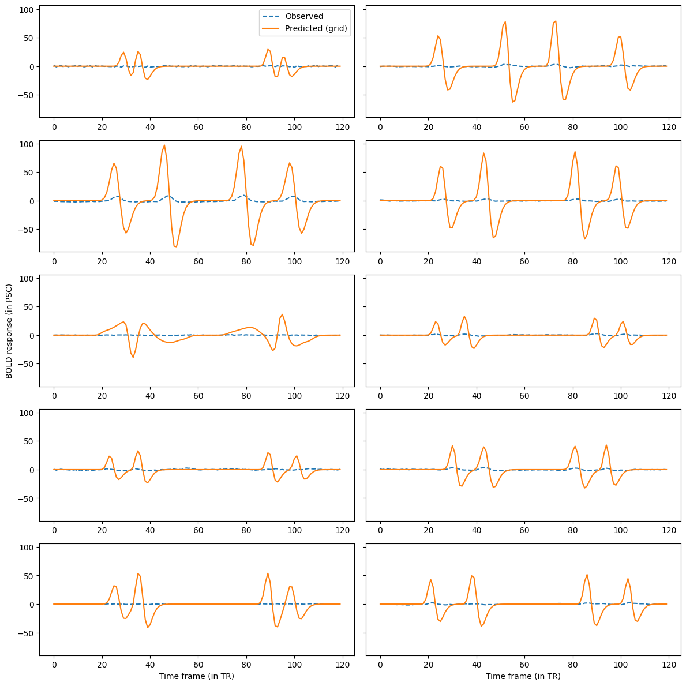
We can see that the pRF model predictions differ substantially from the observed BOLD responses. This is because they still differ in scale (remember that differences in scale were ignored by the cosine similarity loss in the grid search). To align the scales, we can optimize the amplitude of the pRF model together with the baseline using least squares.
from prfmodel.fitters.linear import LeastSquaresFitter
# Create least-squares fitter
ls_fitter = LeastSquaresFitter(
model=prf_model,
stimulus=stimulus,
)
# Run least squares fit
ls_history, ls_params = ls_fitter.fit(
data=response_roi,
parameters=grid_params,
slope_name="amplitude", # Names of parameters to be optimized with least squares
intercept_name="baseline",
)
ls_params
| mu_x | mu_y | sigma | shape | rate | shift | baseline | amplitude | |
|---|---|---|---|---|---|---|---|---|
| 0 | -4.736842 | 2.631579 | 0.531053 | 6.0 | 0.9 | 2.5 | -9.204834e-05 | 0.007297 |
| 1 | -4.736842 | 2.631579 | 0.531053 | 6.0 | 0.9 | 2.5 | -6.529483e-05 | 0.005177 |
| 2 | 1.578947 | -10.000000 | 0.531053 | 6.0 | 0.9 | 2.5 | -5.649781e-05 | 0.007424 |
| 3 | 1.578947 | 10.000000 | 0.531053 | 6.0 | 0.9 | 2.5 | -5.893061e-05 | 0.007652 |
| 4 | -1.578947 | 10.000000 | 0.531053 | 6.0 | 0.9 | 2.5 | -5.801663e-05 | 0.007499 |
| ... | ... | ... | ... | ... | ... | ... | ... | ... |
| 2934 | -1.578947 | 6.842105 | 0.531053 | 6.0 | 0.9 | 2.5 | -2.301521e-05 | 0.001631 |
| 2935 | 3.684211 | 1.578947 | 0.531053 | 6.0 | 0.9 | 2.5 | -3.518023e-05 | 0.002501 |
| 2936 | 3.684211 | 0.526316 | 0.531053 | 6.0 | 0.9 | 2.5 | -3.516991e-05 | 0.002528 |
| 2937 | 1.578947 | -10.000000 | 0.531053 | 6.0 | 0.9 | 2.5 | -3.169389e-05 | 0.004165 |
| 2938 | 5.789474 | 10.000000 | 0.005000 | 6.0 | 0.9 | 2.5 | 2.720567e-09 | 0.000000 |
2939 rows × 8 columns
We can see that the amplitudes are substantially lower compared to the starting value (and our initial guess) for many vertices in our ROI.
Let’s compare the model predictions against the observed responses again.
# Make predictions with least squares parameters
ls_pred_response = np.asarray(prf_model(stimulus, ls_params))
fig, axarr = plt.subplots(5, 2, figsize=(12, 12))
for i, ax in enumerate(axarr.flatten()):
ax.plot(response_roi[random_vertices][i], "--", label="Observed")
ax.plot(ls_pred_response[random_vertices][i], label="Predicted (grid)")
axarr[0, 0].legend()
for ax in axarr[4, :]:
ax.set_xlabel("Time frame (in TR)")
axarr[2, 0].set_ylabel("BOLD response (in PSC)")
fig.tight_layout();
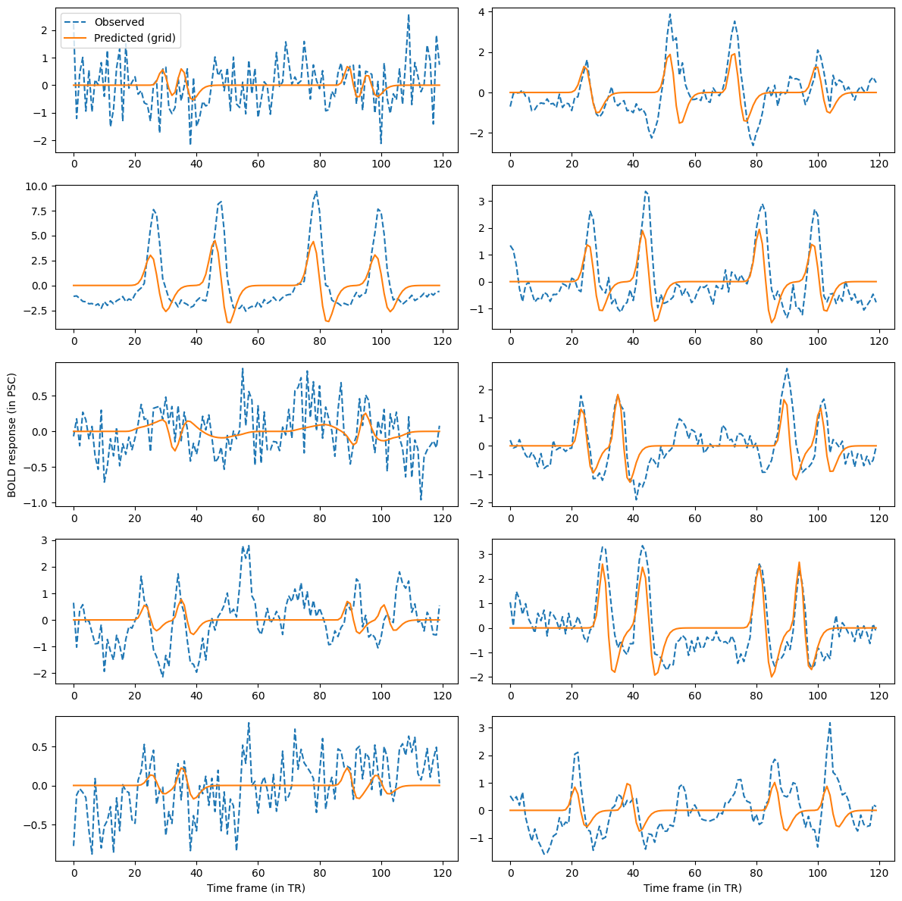
For some of the randomly sample vertices, the prediction is now quite close to the observed BOLD response. However, for other vertices, there are still substantial differences. We can quantify how well the predictions align with the observed timecourses using the R-squared metric. This metric indicates the proportion of variance in the observed data explained by our model predictions.
from keras.metrics import R2Score
r2_metric = R2Score(class_aggregation=None) # Don't aggregate score over vertices
r_squared = np.asarray(r2_metric(response_roi.T, ls_pred_response.T)) # Transpose to compute score across time frames
We can look at the distribution of R-squared values across vertices in the ROI.
fig, ax = plt.subplots(figsize=(12, 6))
ax.hist(r_squared)
ax.set_xlabel("R-squared")
ax.set_ylabel("Frequency");
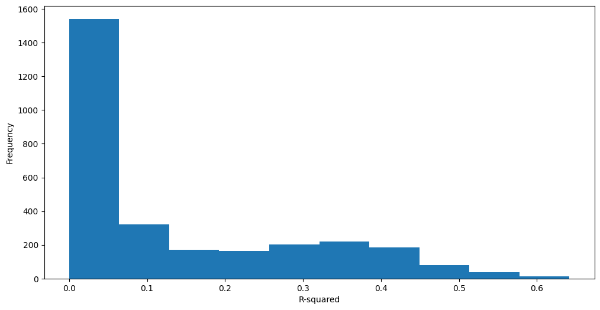
We can see that many vertices have a score close to zero meaning that the pRF model does not predict the observed response well. However, a substantial amount of vertices also have higher scores.
Analyzing the pRF results¶
To analyze and interpret the pRF parameters, we will zoom in on vertices with R-squared > 0.15 which is roughly one third of the vertices in the ROI.
# Create mask for vertices above R-squared threshold
is_above_threshold = r_squared > 0.15
# Compute proportion of vertices above threshold
is_above_threshold.mean()
0.346376318475672
For these vertices, we can look at different quantities to interpret the pRFs estimated by our model.
First, we look at the pRF size indicated by sigma and plot it on the surface flatmap.
# Allocate size vector for the entire surface
size = np.full((response.shape[0],), fill_value=np.nan)
# Fill ROI with estimated size parameters
size[mask_roi] = np.where(is_above_threshold, ls_params["sigma"], np.nan)
polar_v = cx.Vertex2D(dim1=size, dim2=mask_roi, subject=subject,
cmap="inferno", vmin=0.1, vmax=5.0, vmin2=0.0, vmax2=1)
_ = cx.quickshow(polar_v, with_rois=True, with_curvature=True)
** (inkscape:5290): WARNING **: 16:42:09.691: Failed to wrap object of type 'GtkRecentManager'. Hint: this error is commonly caused by failing to call a library init() function.
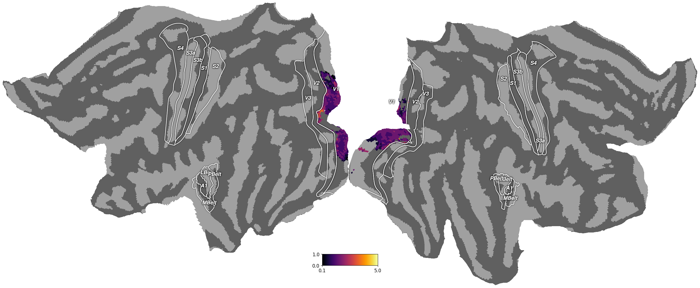
We can see that many of the pRFs in our selected vertices have a small size (~ 1 degree of visual angle) and that only some of the vertices closer to V2 have pRF with larger sizes.
Besides the pRF size, we can also look at the position of the pRF relative to the center of the screen. First, we compute the angle of the center of the pRF relative to the center.
def calc_angle(mu_x: float, mu_y: float) -> float:
"""Compute the polar angle of a pRF from the x- and y-coordinate of its center."""
return np.angle(mu_x + mu_y * 1j)
# Allocate angle vector for the entire surface
angle = np.full((response.shape[0],), fill_value=np.nan)
# Fill ROI with estimated angle
angle_roi = calc_angle(ls_params["mu_x"], ls_params["mu_y"])
angle[mask_roi] = np.where(is_above_threshold, angle_roi, np.nan)
polar_v = cx.Vertex2D(dim1=angle, dim2=mask_roi, subject=subject,
cmap="Retinotopy_HSV_alpha", vmin=-np.pi, vmax=np.pi, vmin2=0.0, vmax2=1)
_ = cx.quickshow(polar_v, with_rois=True, with_curvature=True)
** (inkscape:5304): WARNING **: 16:42:12.551: Failed to wrap object of type 'GtkRecentManager'. Hint: this error is commonly caused by failing to call a library init() function.
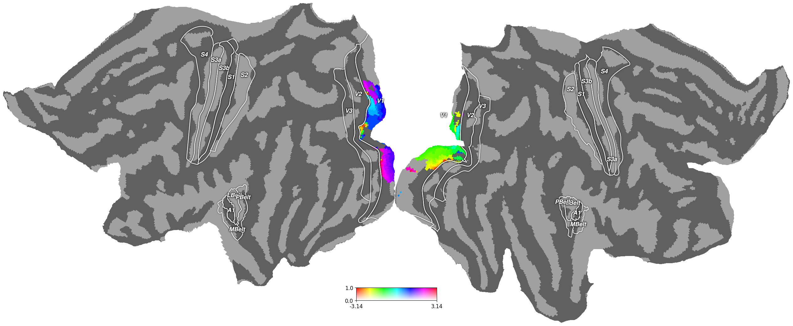
The flatmap shows that the left hemisphere contains many vertices with a positive pRF angle, meaning that the center of the pRF is on the right side of the screen. In contrast, many vertices in the right hemishpere have negative pRF angle, suggesting that the pRF is located on the left side of the screen.
We can also look at the eccentricity, that is, the distance of the pRF center from the center of the screen.
def calc_eccentricity(mu_x: float, mu_y: float) -> float:
"""Compute the eccentricity of a pRF from the x- and y-coordinate of its center."""
return np.abs(mu_x + mu_y * 1j)
eccentricity = np.full((response.shape[0],), fill_value=np.nan)
eccentricity_roi = calc_eccentricity(ls_params["mu_x"], ls_params["mu_y"])
eccentricity[mask_roi] = np.where(is_above_threshold, eccentricity_roi, np.nan)
polar_v = cx.Vertex2D(dim1=eccentricity, dim2=mask_roi, subject=subject,
cmap="Retinotopy_HSV_alpha", vmin=0, vmax=15.0, vmin2=0.0, vmax2=1)
_ = cx.quickshow(polar_v, with_rois=True, with_curvature=True)
** (inkscape:5317): WARNING **: 16:42:15.464: Failed to wrap object of type 'GtkRecentManager'. Hint: this error is commonly caused by failing to call a library init() function.
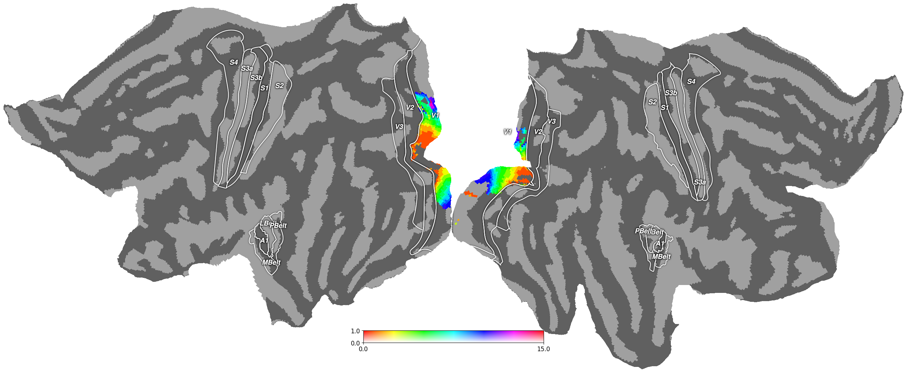
For eccentricity, we can see segments with gradual transitions in both hemispheres that correspond to pRFs that are closer or further away from the center of the screen.
Conclusion¶
In this tutorial, we showed how to fit a two-dimensional Gausian pRF model to empirical fMRI data collected from an experiment in the visual domain. First, we plotted the raw BOLD response data on a surface flatmap. Second, we inspected the experimental stimulus and the raw BOLD timecourses. Then, we defined a pRF model and optimized its parameters using a grid search followed by least-squares to adjust for baseline and amplitude differences. Finally, we visualized the estimated parameters and derived measures on the surface flatmap.
Next steps¶
When comparing the timecourses predicted by our pRF model with the observed timecourses, we saw that there were still substantial differences between them for many vertices. This notion is supported by the relatively low number of vertices with an R-squared score above 0.15. This means that the predictions by our pRF model can potentially be improved. We suggest different directions for improving the pRF model fit:
Increasing the number of points in the parameter grid for the grid search
Finetuning the pRF model parameters with stochastic gradient descent with
prfmodel.fitters.SGDFitterApplying preprocessing steps before fitting the pRF model (e.g., high-pass filtering)
Optimizing the impulse response model parameters in the grid search
Building a more complex pRF model (e.g., compressive spatial summation, see Kay et al., 2013; we will cover this in another tutorial soon)
Stay Tuned¶
More tutorials on fitting models to empirical data and creating custom models are in the making.
For questions and issues, please make an issue on GitHub or contact Malte Lüken (m.luken@esciencecenter.nl).
References¶
Dumoulin, S. O., & Wandell, B. A. (2008). Population receptive field estimates in human visual cortex. NeuroImage, 39(2), 647–660. https://doi.org/10.1016/j.neuroimage.2007.09.034
Glasser, M. F., Coalson, T. S., Robinson, E. C., Hacker, C. D., Harwell, J., Yacoub, E., Ugurbil, K., Andersson, J., Beckmann, C. F., Jenkinson, M., Smith, S. M., & Van Essen, D. C. (2016). A multi-modal parcellation of human cerebral cortex. Nature, 536(7615), 171–178. https://doi.org/10.1038/nature18933
Kay, K. N., Winawer, J., Mezer, A., & Wandell, B. A. (2013). Compressive spatial summation in human visual cortex. Journal of Neurophysiology, 110(2), 481–494. https://doi.org/10.1152/jn.00105.2013
Van Essen, D. C., Ugurbil, K., Auerbach, E., Barch, D., Behrens, T. E. J., Bucholz, R., Chang, A., Chen, L., Corbetta, M., Curtiss, S. W., Della Penna, S., Feinberg, D., Glasser, M. F., Harel, N., Heath, A. C., Larson-Prior, L., Marcus, D., Michalareas, G., Moeller, S., … WU-Minn HCP Consortium. (2012). The Human Connectome Project: A data acquisition perspective. NeuroImage, 62(4), 2222–2231. https://doi.org/10.1016/j.neuroimage.2012.02.018